Arrival
The day begins in the gardens, where guests can be welcomed outdoors before moving on to the Quinta's other spaces.

Quinta Casal Camaz | Aveleda
For more than 30 years, Quinta Casal Camaz has hosted weddings, christenings, communions, corporate events and other celebrations in Aveleda, Vila do Conde.
Since 1995
Quinta Casal Camaz began as a farmhouse, long before it opened its doors to weddings and celebrations.
It was in 1995 that everything began to change. For a family wedding, some of the farmhouse's spaces were prepared to host the celebration. That transformation gave rise to the Quinta's first hall and, with it, a new way of bringing the house to life.
Over the following decades, the Quinta grew alongside the family. The first hall took on a new purpose, the current main hall was built, and the different spaces were gradually adapted into what Quinta Casal Camaz is today.
More than 30 years later, now in its third generation, a new chapter begins.
Three generations on, the Quinta keeps evolving without leaving behind the legacy that brought it here.
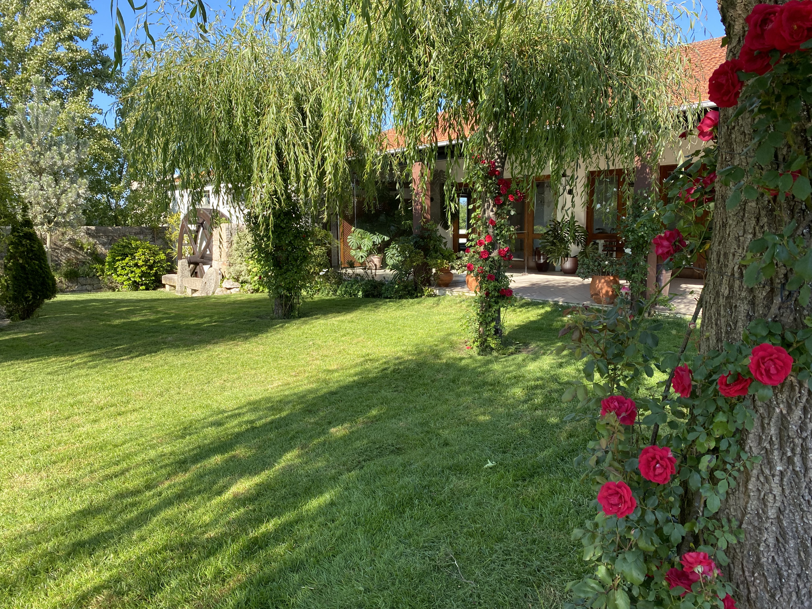
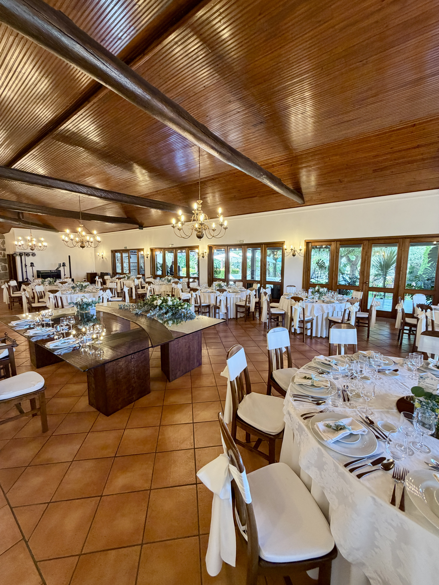
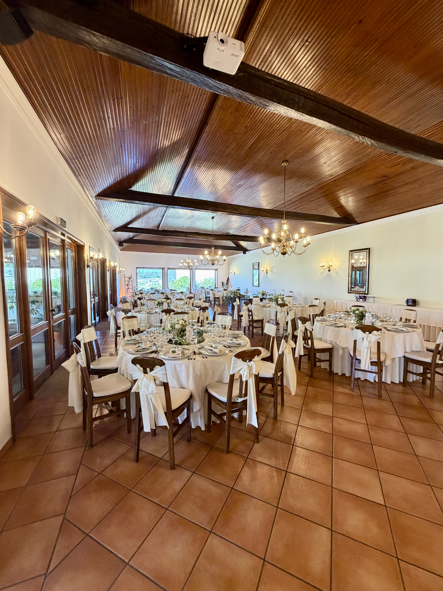
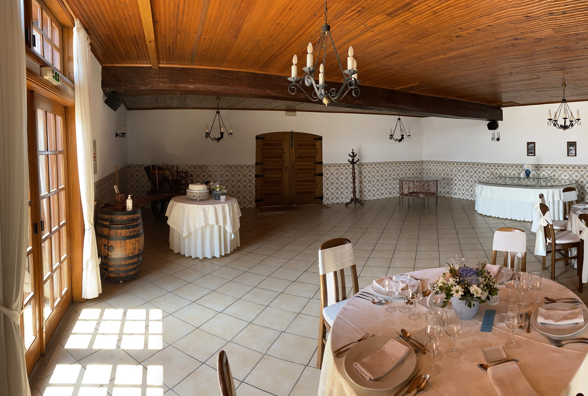
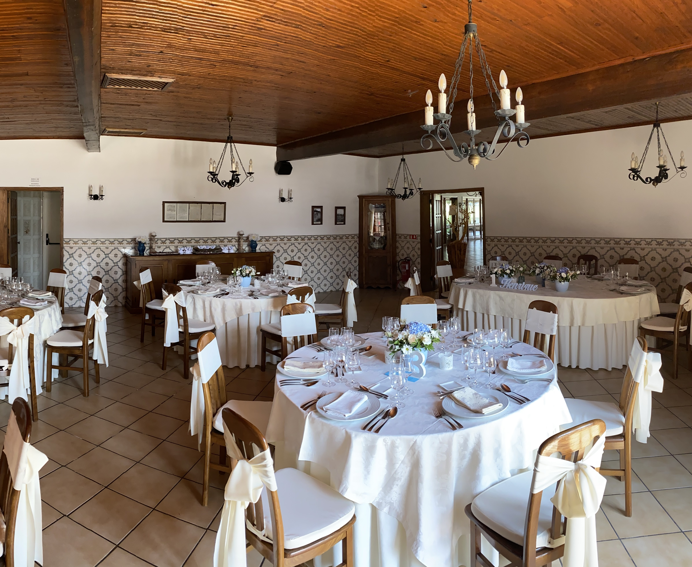
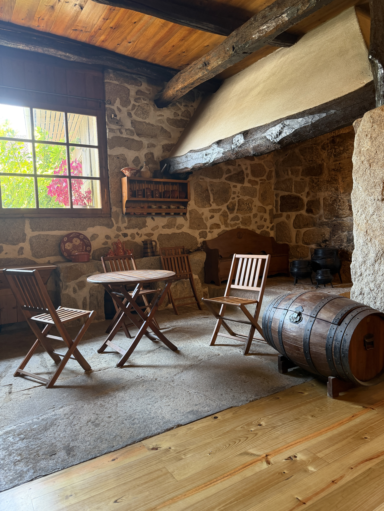
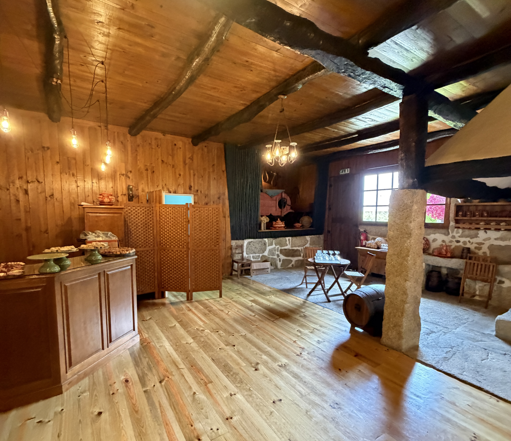
The Halls
The main hall is the heart of every celebration, currently able to host up to 180 guests. Next to it, the Quinta's original hall serves as a complementary space, allowing different moments to be created throughout the event.
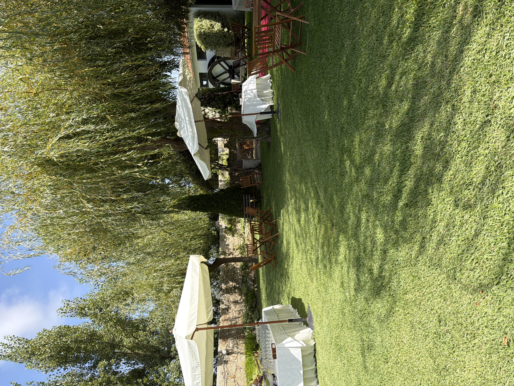
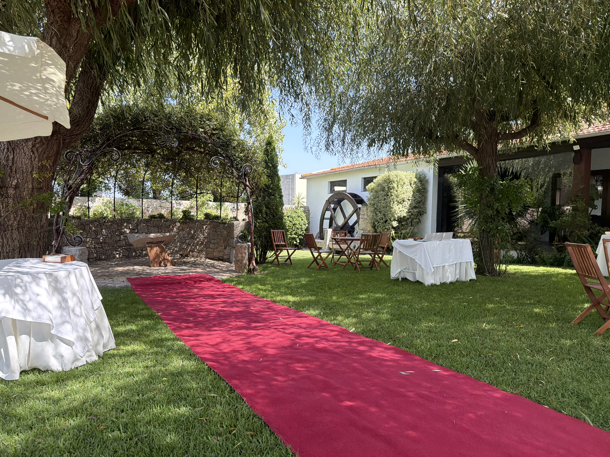
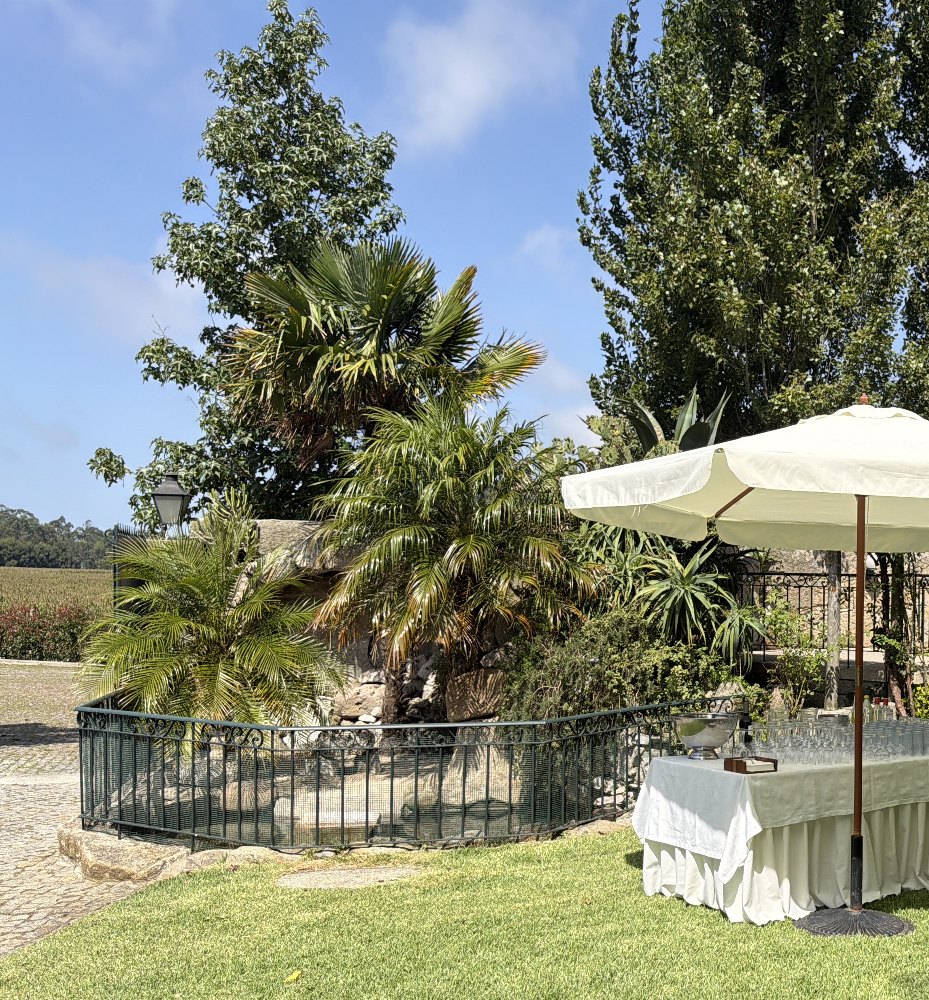
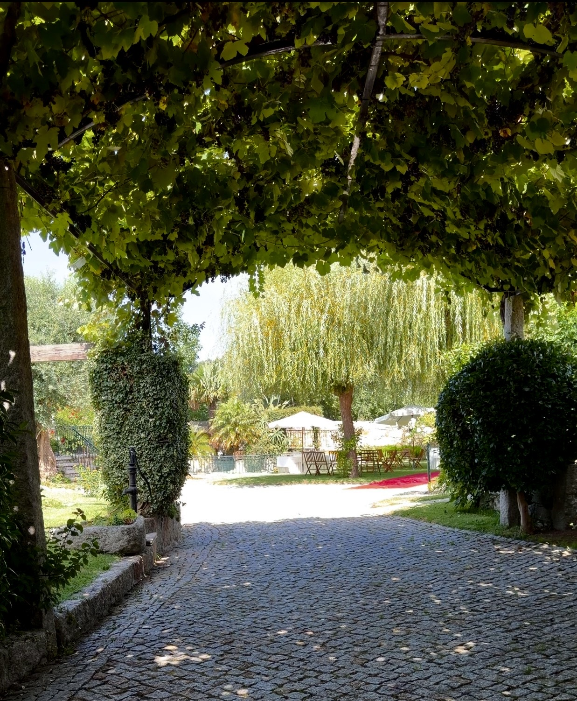
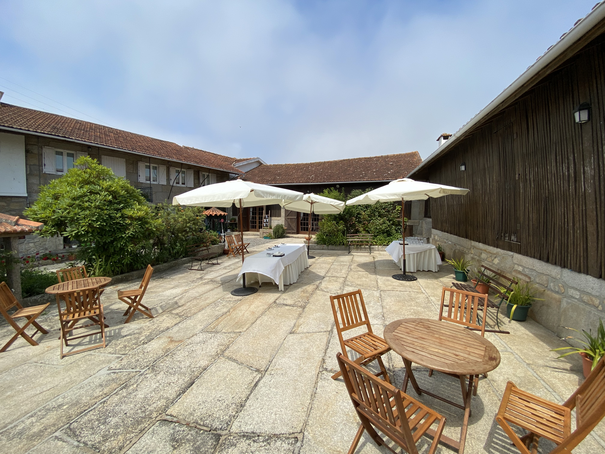
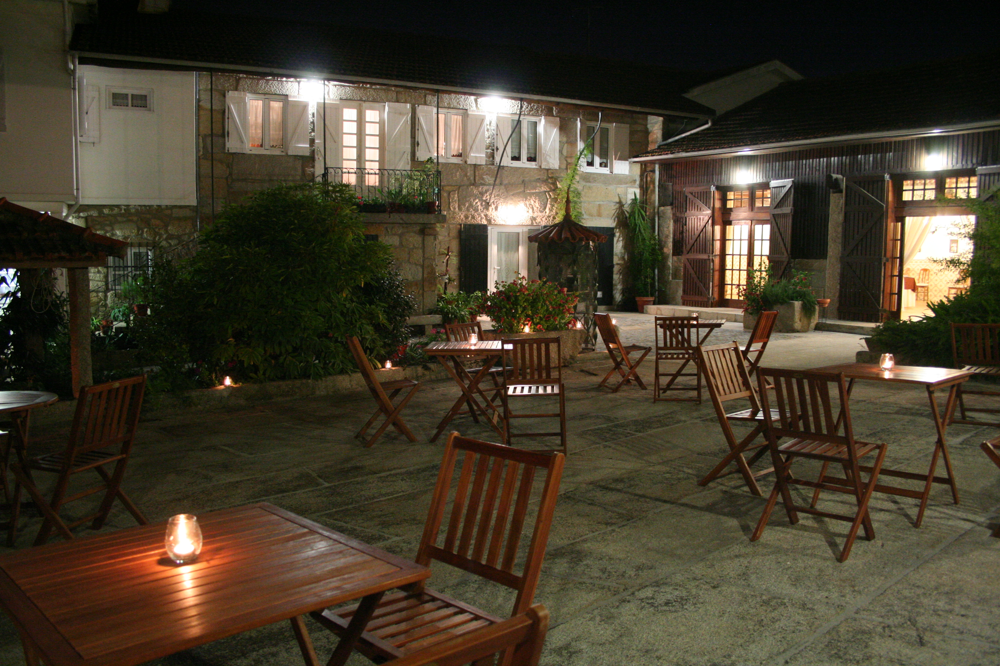
GARDENS & OUTDOOR AREAS
The outdoor spaces are part of the celebration and can host different moments of the day, from the civil ceremony and welcoming guests to open-air meals.
The heart of the garden offers a natural setting for outdoor civil ceremonies, surrounded by greenery and shaded by the trees.
The old Eira can be set up to host meals and celebration moments outdoors.
up to 60 guests
More than a venue
The day begins in the gardens, where guests can be welcomed outdoors before moving on to the Quinta's other spaces.
The main hall hosts the meal and the celebration's key moments, with direct access to the outdoor spaces.
In partnership with JAlmeida Catering, every meal is cooked on the estate, along with the preparation of fruit and cheese.
The complementary hall, gardens and the Eira allow different atmospheres to be created as the day unfolds.
Gallery
Getting here
Quinta Casal Camaz is located in Aveleda, Vila do Conde, halfway between Porto and Vila do Conde. Access is easy via the A28, with Francisco Sá Carneiro Airport and the Vilar do Pinheiro Metro station nearby.
Let's talk?
You can book a visit to the estate by email or phone. Tell us the date, the type of event and the approximate number of guests.